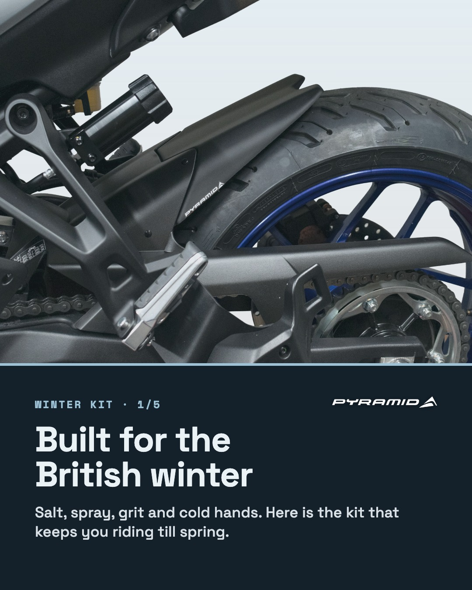
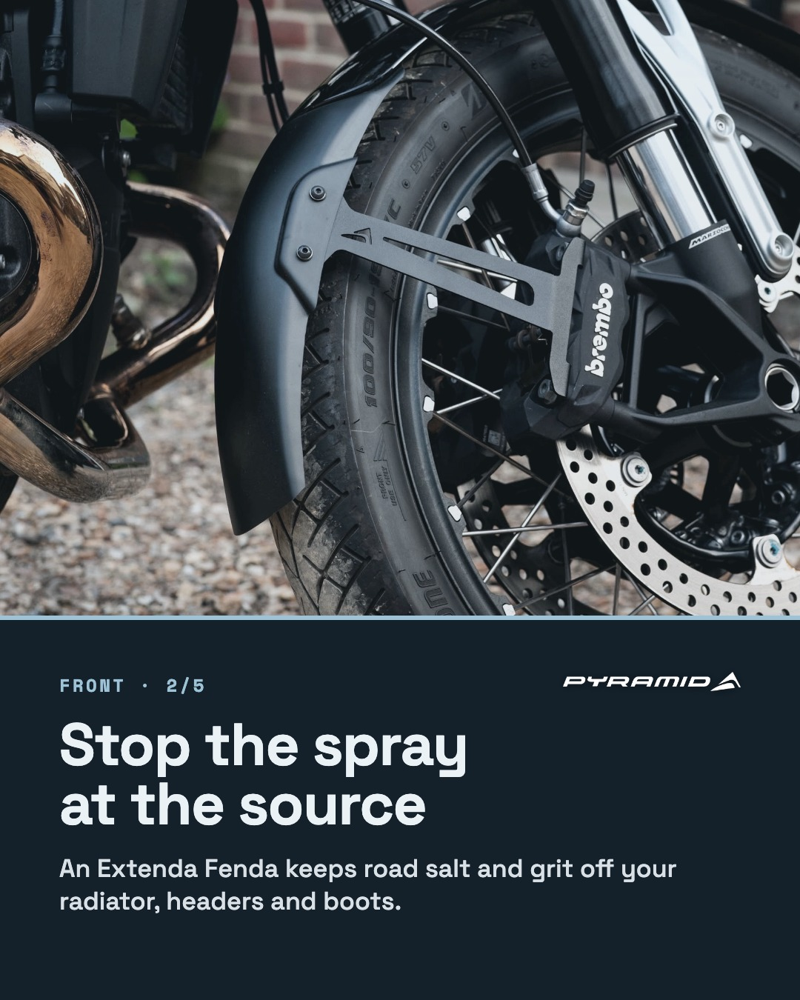
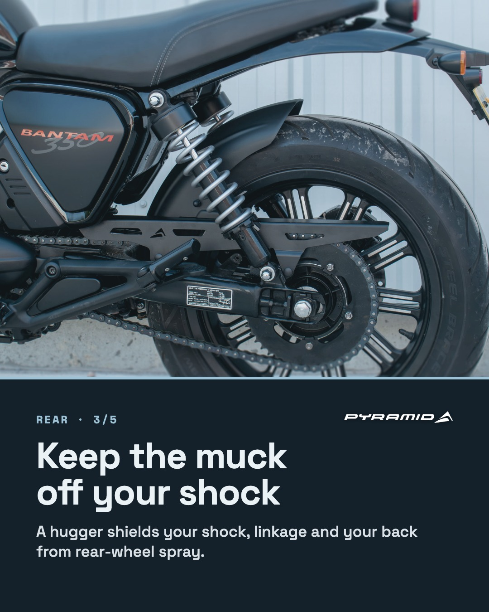
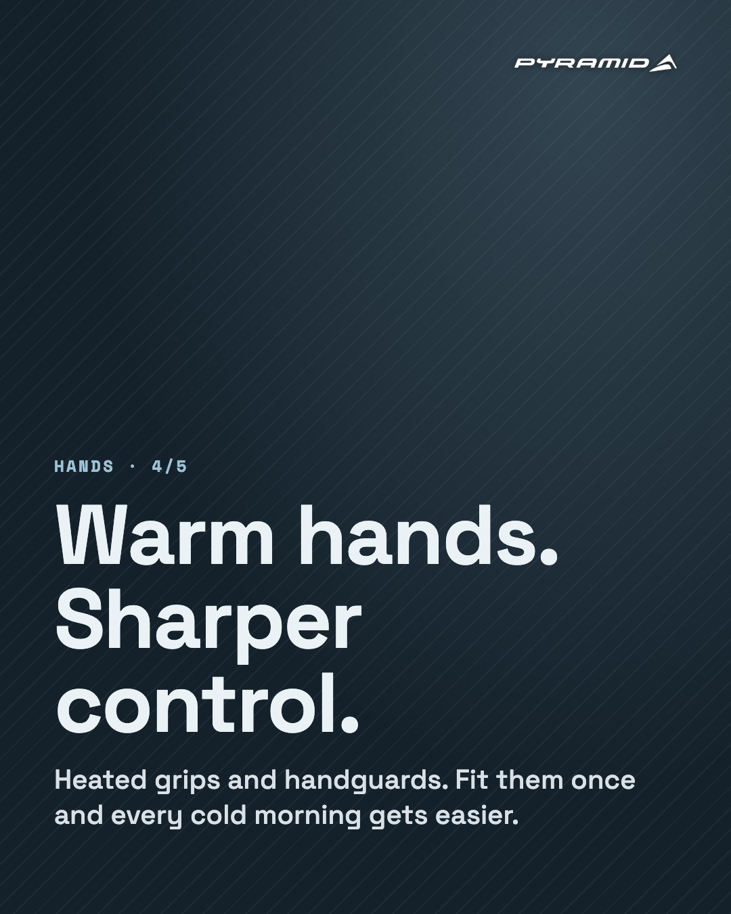
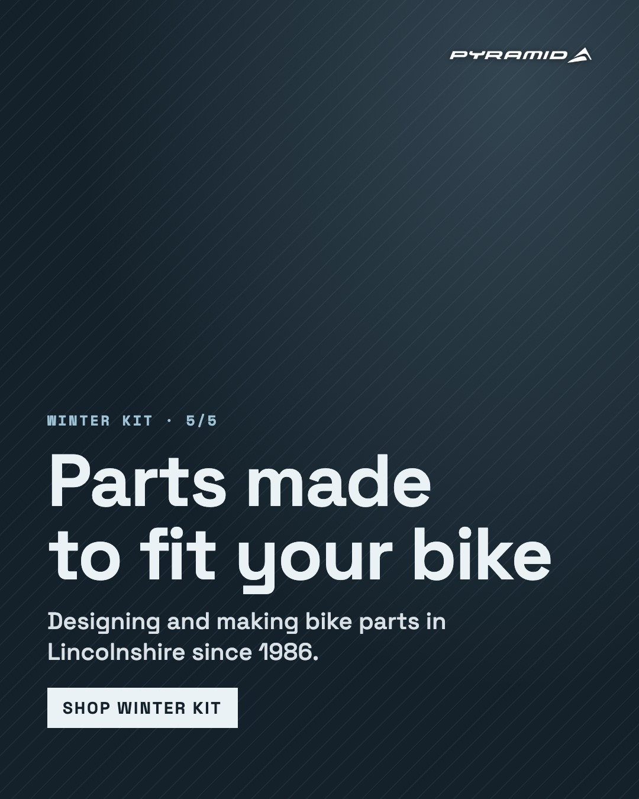
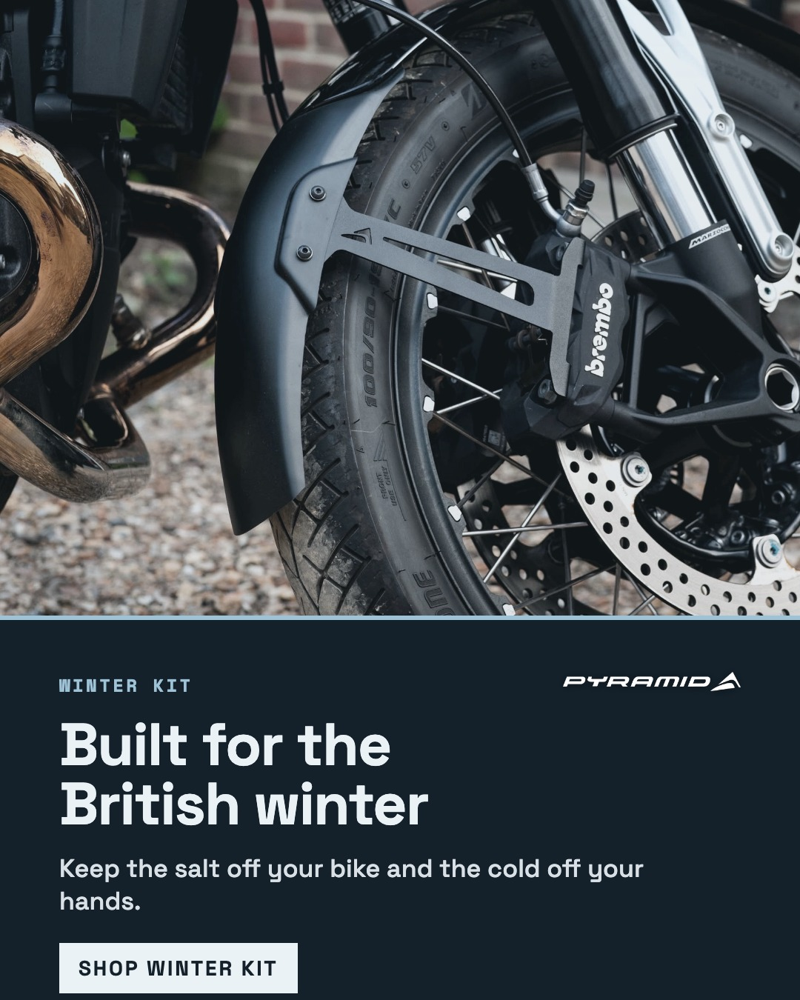
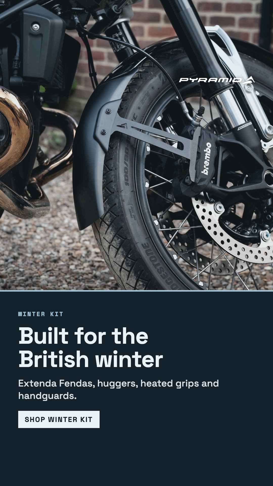

Three winter problems, one Pyramid part for each
The business AI flagged heated grips and winter protection lines as featured, pointing to seasonal intent worth amplifying now. The angle takes the three things every UK winter rider deals with and points each at the part that fixes it. Pyramid's own parts lead.
| Problem | Lead product | Supporting lines | Link |
|---|---|---|---|
| Spray and salt up front | Extenda Fendas | Extenda Fenda EXTRAs, front mudguards | extenda-fenda |
| Muck at the back | Huggers | Hugger extensions, spray guards | huggers |
| Cold hands | Heated grips | Handguards, handguard extensions | heated-grips |
| Wind and rain on the body | Touring screens | Screen deflectors | touring-screens |
| Salt on the bike after a ride | Bike cleaners | Bike covers | bike-cleaners |
Look
Colour photography with a cool grade and a solid slate panel under each image, so the copy never sits over the product. Black Friday is black and white with orange, so the two won't be confused in a feed.
Ready to paste
Emoji are optional. Drop them if Pyramid's feed doesn't use them.
The gritters are out. The bike doesn't have to go away. ❄️ Swipe for the three fixes we'd make before the first proper frost. Spray up front, muck at the back, cold hands on the bars. Every part is made to fit your model. Link in bio to find yours. #motorcycle #wintermotorcycling #ukbikers #bikelife #extendafenda #heatedgrips #pyramidmoto
Riding through winter? These are the three upgrades that make the biggest difference. 1. An Extenda Fenda to stop salt and grit hitting your engine 2. A hugger to keep the muck off your shock and your back 3. Heated grips and handguards so your hands still work at 7am All listed by model, so you only see what fits your bike. 👉 pyramidmoto.co.uk/collections/extenda-fenda
Keep the salt off your bike and the cold off your hands. Winter kit, made to fit. Link in bio.
Primary text The gritters are out. Keep riding with parts made to fit your bike. Extenda Fendas, huggers, heated grips and handguards. Headline Built for the British winter Description Find the parts for your model CTA button Shop now
One email, three blocks
Send before the Black Friday emails start, or in the gap after. It carries no offer, so it won't compete with the sale.
| Subject line A | Winter's here. Your bike doesn't have to hibernate |
| Subject line B | Salt, spray and numb fingers. Sorted |
| Subject line C | The kit that keeps you riding till spring |
| Preheader | Extenda Fendas, huggers and heated grips, made to fit your bike. |
| Hero image | Single post image, cropped to 1200 × 600 |
Built for the British winter The gritters are out, the lanes are wet and the first frosty morning has already caught your fingers out. You don't have to park the bike till April. A few well-chosen parts deal with most of what winter throws at you, and they all fit in an evening. FRONT Stop the spray at the source An Extenda Fenda carries your front mudguard down towards the road, so salt and grit stop hitting your radiator, headers and boots. [Find your Extenda Fenda] → /collections/extenda-fenda REAR Keep the muck off your shock A hugger wraps the rear tyre and stops the spray before it coats your shock, linkage and your back. [Find your hugger] → /collections/huggers HANDS Warm hands, sharper control Heated grips with four heat levels, plus handguards to keep the wind off. Cold hands are slow hands, so this one's about more than comfort. [Shop heated grips] → /collections/heated-grips Not sure what fits? Every part on our site is listed by model. Or call the team on 01427 677 990 and we'll tell you. Read the full winter kit guide → blog post Ride safe this winter. The Pyramid team, Gainsborough
Built for the British Winter. The Kit That Keeps You Riding Till Spring
| URL | /blogs/news/winter-motorcycle-kit-guide |
| Meta title | Winter Motorcycle Kit Guide | Heated Grips, Fendas & Huggers |
| Meta description | Salt, spray and cold hands don't have to park your bike till spring. The Pyramid guide to the winter kit that keeps you and your motorcycle riding. |
| Hero image | Single post image, or the Extenda Fenda category header |
Built for the British winter
There are two kinds of British rider in November. The ones who drain the carb, throw a cover over the bike and wait for April. And the ones who keep going.
If you're in the second group, you already know what winter does. The gritters are out from the first frost. Every lane is wet, every puddle is part salt, and your front wheel throws the lot straight at your engine. Your hands go numb by the second roundabout.
None of that has to end your riding season. Most of it comes down to a handful of parts that take an evening to fit. Here's what we'd put on a bike that's going to see real winter miles.
Up front. Stop the spray at the source
Your front mudguard was designed to look good in a brochure. In January it lets a fan of grit and salty water hit your radiator, exhaust headers, fork seals and boots.
An Extenda Fenda bolts to the back of your existing mudguard and carries it down closer to the road. That catches the spray before it reaches the engine. It's a small part that saves a lot of scrubbing, and it's designed for your specific model so it sits right.
For adventure and touring bikes that see the worst of it, an Extenda Fenda EXTRA goes further still.
At the back. Keep the muck off your shock
The rear wheel is just as bad, only you can't see it. It coats your shock, linkage and the underside of the seat in a paste of road dirt and salt. On a lot of bikes it coats you too.
A hugger wraps close around the rear tyre and stops it at the wheel. Add a hugger extension and you cover even more of the arc. If you've ever cleaned a rear shock spring in December with a toothbrush, you'll feel the difference after one ride.
Your hands. Warm grips, better control
Cold hands aren't just miserable. They're slow on the brake and clumsy on the clutch, and that matters more on a greasy road than a dry one.
Heated grips are the single biggest comfort upgrade you can make for winter. The Daytona sets we stock fit standard 7/8 inch bars and have four heat levels, so you can run them gently on a mild morning or turn them right up when it's below zero.
Pair them with handguards. Heated grips warm your palms. Handguards keep the wind off the backs of your fingers so that heat doesn't get stripped away. Together they're better than either one alone.
The rest of you. Less wind, less wet
A taller touring screen pushes the air and the rain over your shoulders instead of into your chest. On a naked or retro bike a fly screen won't make it a tourer, but it takes the edge off at motorway speed. Either way you arrive warmer and less tired.
After the ride. Get the salt off
Road salt keeps working long after you've parked up. Rinse the bike down with cold water when you get back. Warm water speeds up the corrosion. Then use a proper bike cleaner once a week and let it dry before it goes under a cover.
The less salt reaches the bike in the first place, the less there is to wash off. That's why the fenda and hugger come first on this list.
Find the parts for your bike
Every part above is listed by model on our site, so you only see what fits. Pick your bike, pick your winter kit, and keep riding while everyone else waits for spring.
Pyramid has been designing and making motorcycle parts in Gainsborough, Lincolnshire since 1986. Questions on fitment? Call us on 01427 677 990 or use the live chat.
Open questions
- Is there a dedicated Winter Kit collection, or should the CTAs point at the individual collections?
- The heated grips collection page showed an empty grid when checked on 11 Nov, while the stock file has 23 Daytona sets in stock. Worth fixing before we send traffic there.
- Any winter photography (wet roads, spray) to swap in for the studio and yard shots?
Carousel, single post and story
The five-slide carousel leads. The single post is the one to boost. The story has room for a link sticker below the button.
Carousel · 1080 × 1350





Single post and story

